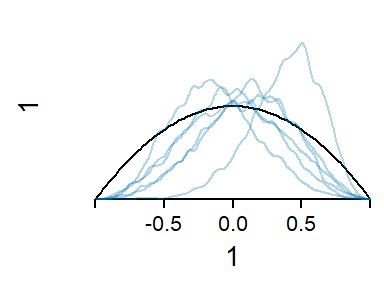
9 Modeling tactics
Interesting technique: Post-data manipulation of the random effects SD: (Brown & Mosteller 1991: 231)
In practice, the laboratories are likely to be a “scattering” rather than a random sample. In such cases it seems better (1) to begin by treating them as if they were a random sample, and then (2) to add “a grain of salt,” increasing the estimated component of variance to allow for nonrandom selection.
Post-processing random effects to address questions of generality
Random slopes as a strategy for assessing the generality of a pattern
9.1 Using random effects to assess the generality of a pattern
We discussed the limited role of statistics for establishing the generality of a pattern we have found in our data. Whenever we infer beyond the set of speakers, conditions, and circumstances we have observed, conclusions rest in part on extra-statistical sources of information. Nevertheless, our data do offer information that allow us to form some judgement on the degree of tenacity with which we should cling to broad inferences. Broad inferences represent the nomothetic orientation in empirical work, and usually include statements about typical, or average cases. As we discussed in Chapter 8, the idiographic orientation offers an additional approach to data. In the following, we will demonstrate how we can use a mixed-effects regression model to pursue strategies at this level of analysis. These will provide supplementary insights that enable us to audit our inferences about the average case. We will see that this approach will uncover linguistically meaningful assessments of variability, and also add data-based clues to the generality of the average patterns we infer.
I will use the term consistency
- Cedergren and Sankoff (1974, 334) “it is difficult to escape the conclusion that those aspects of performance that are found to be thoroughly systematic in an individual and throughout a community are relfections of linguistic competence.”
9.1.1 Consistency across speakers
Sidman (1960, 46) refers to this as subject generality.
9.1.2 Residual variation among speakers
The residual variation among speakers is interesting in two respects. For one, it tells us about the amount of remaining between-speaker variation, i.e. the variation that is left unexplained (in a statistical sense) once the speaker-level predictors (if any) are taken into account. Further, it provides a relevant yardstick for assessing the explanatory power of the speaker-level predictors. If the remaining variation overwhelms that accounted for by cluster-level predictors, this can be interpreted either as indicating the predictive incapacity of the model and/or the large amount of unsystematic idiosyncratic behavior of the individual speakers.
The left-hand dot diagram in Figure 9.1 shows the fitted values for the speakers in the sample on the proportions scale. The social predictors apparently account for a considerable variation in g-dropping. The right-hand dot diagram in Figure 9.1 compares this systematic part of the model to the residual variation among speakers on the model (i.e. logit) scale. The residual variation is noticeably greater, which indicates that considerabl parts of the variation among speaker is left unaccounted for.
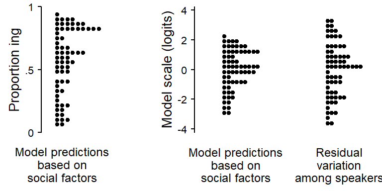
To get a sense of what the residual variation among speakers amounts to on the proportion scale, Figure 9.2 illustrates the model-based residual variation among speakers for two conditions, one with a predicted probability near .50 (where between-speaker variation is greatest on the proportion scale), and one closer to the bounds of the scale. Icons are used to give a sense of the variability among 100 hypothetical speakers. This technique is borrowed from Kay et al. (2016). The probability distribution that is represented by the random intercept standard deviation is visualized by discrete icons. Each icon depicts a 1 percent probability, i.e. roughly 1 percent in the sampled population of speakers.
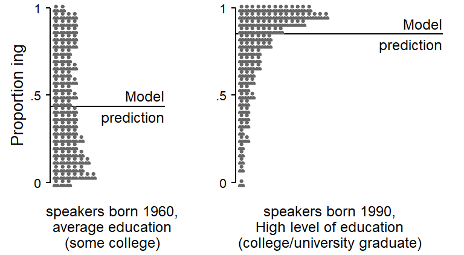
9.1.3 Residual variation among words
We can do the same for the the other clustering variable, Item. Figure 9.3 shows the fitted values for the lexical items in the estimation sample.
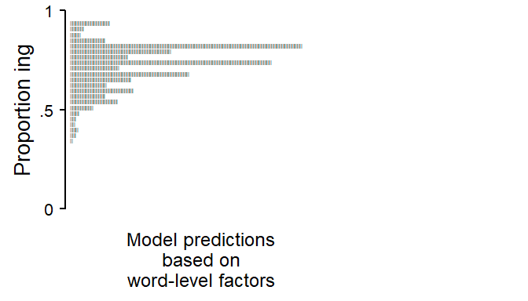
Figure 9.4 compares the fitted values against the residuals on the model scale.
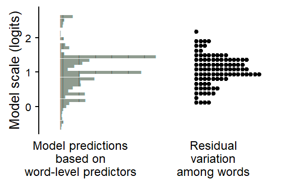
9.1.4 Token-level predictors: Consistency across speakers
Sensitivity analysis for prior of random effects parameters
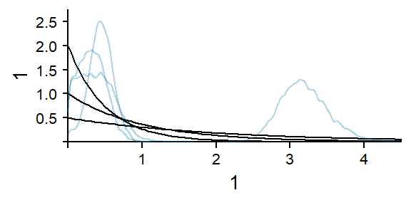
Since the token-level predictor Following Context is crossed with Speaker, the data have higher resolution than is offered by the average profiles that we have extracted above. Thus, we have information about this predictor at the level of the individual speaker. We can assess the stability of the averaged pattern across the speakers in our sample. This type of variability is linguistically meaningful since it reveals the consistency with which a constraint operates across speakers. It will also add statistical indications that may inform questions about the generality of the pattern throughout the sampled and target population.
In principle, we could use a model that directly estimates the pattern for each speaker. While this approach has intuitive appeal, it only works if we have, for each speaker, enough tokens for each level of the token-level factor. Even though we have an appreciable number of tokens, overall, for each speaker, the cross-classification of Following Context and Speaker in Figure 4.8 showed that many speakers produced few pre-pausal and pre-velar tokens. We therefore need a more general approach to the assessment of between-speaker consistency with regard to language-internal factors.
In multilevel models, the variability among speakers is absorbed into the variational structure of the model. This part of our statistical model includes the batches of random intercepts and random slopes. Random intercepts express the variation among speakers in the overall rate of g-dropping and random slopes express the variation among speakers in the patterns observed for factors that can vary within a speaker. These are typically language-internal factors such as token-level and word-level predictor. Whil the behavior of each speaker informs the estimation of the variational part of the model, this variation is documented in the form of summary measures that aim to condense this information into a few numbers. There are two types of quantities involved: standard deviations and correlations. Together, they form a highly abstract report of the patterns of variation.
It is rarely the case that these summary measures of variational structure are directly interpretable. Even in simple settings where we have only a single random intercept standard deviation, this will still be on the logit scale. We therefore need to post-process these measures into interpretable quantities. To this end, we will use the following strategy. Recall that the random effects parameters (standard deviations and correlations) condense the data-based clues about between-speaker variability into a handful of numbers. We will use these parameters to simulate a set of, say, 500 imaginary speakers, who mirror the structure of between-speaker variation preserved by our model. We will use these fabricated individuals to extract quantities at the idiographic level of description and behavior. An essential part of this strategy is to preserve the integrity of the (fabricated) speaker for visualization and computation of summary measures.
Let us now consider the token-level factor Following Context, which has 4 levels: coronal, other, pause, and velar. In our regression model, this predictor is represented by three terms. We used sum contrasts to represent the predictor, and the model therefore produces the following summary:
\[ \left[\begin{array}{lll} \sigma_{1} & \rho_{12} & \rho_{13} \\ & \sigma_{2} & \rho_{23} \\ & & \sigma_{3} \end{array}\right] \]
Our first step, then, is to reconstruct the standard deviations and correlations for (and among) the 4 levels. Technically, what we do is generate 500 imaginary speakers and then compute standard deviations and correlations from this set of fabricated speakers:
\[ \left[\begin{array}{llll} \sigma_{\textrm{coronal}} & \rho_{\textrm{other}}^{\textrm{coronal}} & \rho_{\textrm{pause}}^{\textrm{coronal}} & \rho_{\textrm{velar}}^{\textrm{coronal}} \\ & \sigma_{\textrm{other}} & \rho_{\textrm{pause}}^{\textrm{other}} & \rho_{\textrm{velar}}^{\textrm{other}} \\ & & \sigma_{\textrm{pause}} & \rho_{\textrm{velar}}^{\textrm{pause}} \\ & & & \sigma_{\textrm{velar}} \end{array}\right] \]
These standard deviations and correlations are more informative. For instance, we now have a standard deviation for each following context. This measure of spread is on the logit scale, so we need to be careful when interpreting it. We will return to this point shortly. Nevertheless, we now have summary figures for all contexts:
\[ \left[\begin{array}{rrrr} 0.27 & -.05 & -.01 & -.38\\ & 0.47 & +.12 & -.72\\ & & 0.37 & -.62\\ & & & 0.72 \end{array}\right] \]
Such summaries are useful, but the suggested patterns of variability can be made more transparent through visualization. Figure 9.5 shows a set of 500 synthetic speakers, which are simulated based on the posterior medians of the random effects parameters. The think line that runs through the center represents the average pattern over the speakers in our sample. The thin lines represent the simulated individuals. Each imagined speaker adds a profile to the plot. While these are imagined individuals, their joint distribution mimics that of the speakers in our sample.
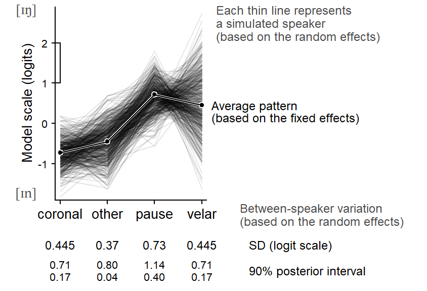
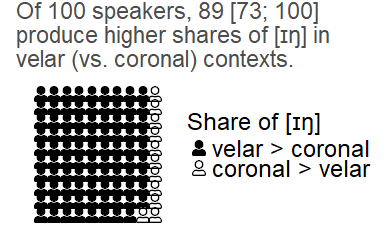
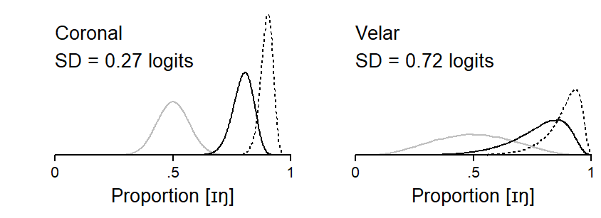
9.1.5 Word-level predictors: Consistency across speakers
Since word-level predictors are crossed with Speaker, we can likewise examine their consistency across speakers. We will start with the continuous predictor Frequency. Figure 9.8 shows the amount of between-speaker variation in the association between Frequency and the share of ing. Apparently, the relation between Frequency and the response variable is very consistent across individuals, While the magnitude of the pattern (i.e. the slope of the regression line) varies among individuals, the model expects very few speakers to have small (or even a reverse) frequency effect.
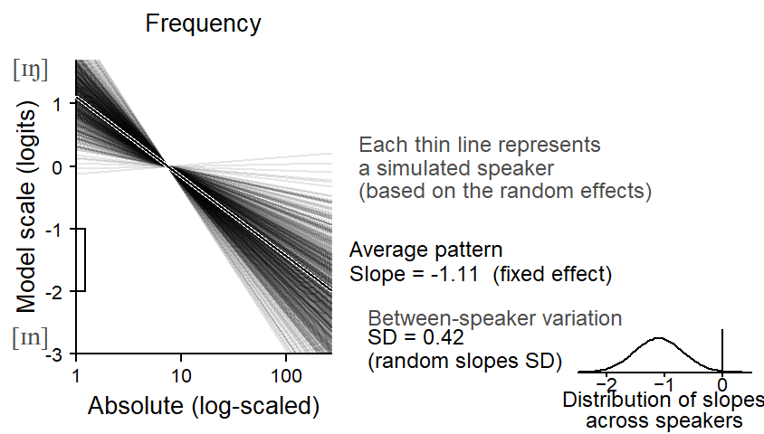
The icon array in Figure 9.9 underscores this remarkable level of stability. On average, 100 out of 100 speakers are expected to show the same directionality.
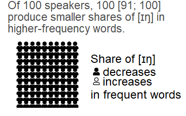
Figure 9.10 shows between-speaker variation for the predictor Lexcial Category. The cline across word classes is very stabe across individuals.
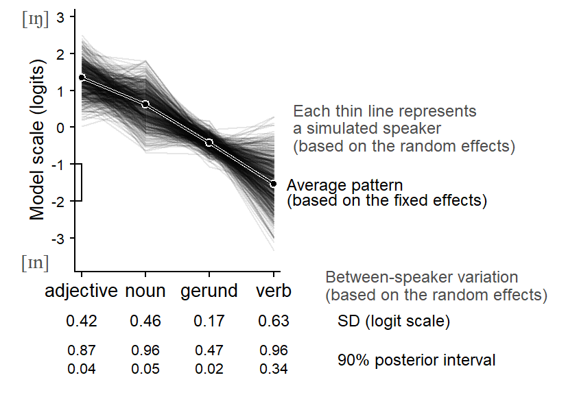
The icon array in Figure 9.11 compares the rate of g-dropping in nouns and verbs. This contrast is also remarkably stable across speakers.
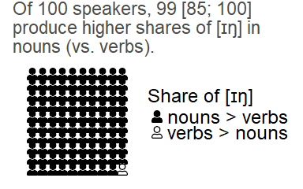
Finally, Figure 9.12 shows the consistency of variation as a function of the preceding sound.
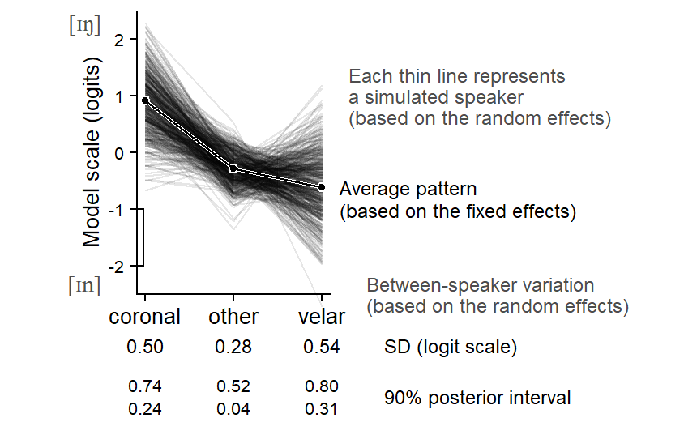
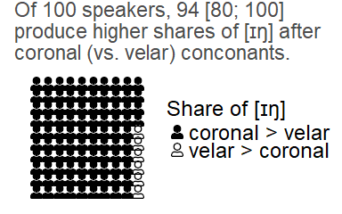